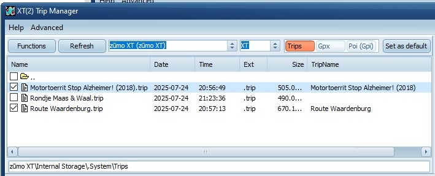
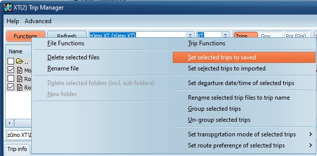

3) Fixing Rut
Previous
Next
Load trips using your preferred method.
Connect the XT(2) to your PC and start TripManager.
On the Trips preset your trips are shown.
Trips without a checkmark are ‘Imported’ and are subject to
RUT behaviour
.
Trips with a checkmark are 'fixed'.
Individual files can be (un)checked, and will be saved to the device.

Or select all files, use CTRL-A, and choose
Functions/Set selected trips to saved

You can unplug your device.
On the trip planner your fixed trips should be listed under ‘Saved’.
Background:
What is RUT? See here:
https://zumouserforums.co.uk/app.php/ZXT- P102
Notes:
TripManager pre version V1.5 had an initial delay after the first write to the device. This has been fixed in V1.5.
If you use the function
Send to
and check .trip files, the trips are fixed (set to saved) by default.